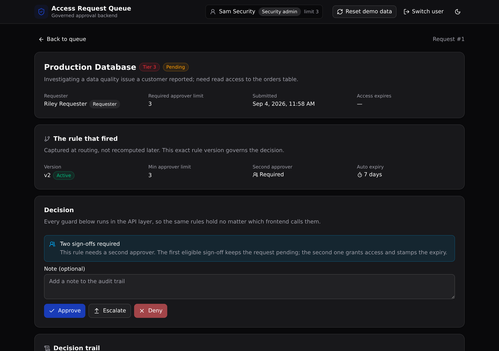

The rules live in the backend, not the frontend.
The governed backend under an AI-built internal access-request tool. Every approval is routed by a versioned rule, checked against segregation of duties, and written to an audit trail, all in one Xano API layer the frontend cannot go around.

What it demonstrates
A team builds an internal access-request tool fast (Bolt, Lovable, v0). Then someone has to make it safe for production. These controls do not belong in the frontend, because a rebuilt frontend would carry them off. They live in the Xano API layer instead.
API-layer RBAC
Requester, approver, and security admin each see and can do different things. The role is checked on every endpoint. This is not row-level security.
Segregation of duties
You cannot approve your own request. The backend refuses it, no matter which client asks.
Approval thresholds
An approver signs off only up to their limit. A request above it is forced to an escalation.
Versioned rules
One active rule per system and tier. Superseded versions are kept, so the history stays visible.
Append-only audit trail
Every decision is recorded with its actor and time. Rows are only ever inserted.
Auto-expiry
Granted access expires after a set number of days, swept by a backend endpoint.
API surface
Ten endpoints under the pinned api:access group. Each guard is a precondition in the backend.
| Method | Path | What it enforces |
|---|---|---|
| POST | /api:access/login | Checks the password against the users auth table and mints a token |
| POST | /api:access/requests | Submits a request, routes it through the active rule, captures which rule fired |
| GET | /api:access/requests | Lists the queue, scoped to the caller's role in the backend |
| GET | /api:access/requests/{id} | One request with its system, requester, rule, and audit trail |
| POST | /api:access/requests/{id}/decide | Approve, deny, or escalate under the role, self-approval, and threshold guards |
| POST | /api:access/expire-sweep | Expires access past its window and audits it (security admin only) |
| GET | /api:access/rules | Every rule, active and superseded (the versioning) |
| POST | /api:access/seed | Resets and reseeds the demo data |
The screens
Role sign-in
One click to sign in as each seeded role, so the RBAC story is obvious.
Queue
The request list scoped to your role, with a submit form that shows routing live.
Request detail
The rule that fired, the guarded decision panel, and the append-only trail.
Rules
Active and superseded rules per system and tier, plus the admin expiry sweep.
Use this template
Clone it and deploy your own live copy in about a minute. Paste this to a coding agent, or run the commands yourself.
Start a new app from this Xano template:
https://github.com/xano-scratch/access-request-queue
Clone it, run: npm install
then: npx xanots login
then: npm run xano:deploy (builds the frontend, deploys, prints the live URL)
Open the URL, click "Load demo data", and sign in with any account
(password: password123). Then adapt the tables and endpoints in xano/
to your own domain.npm run xano:deploy for fresh live links. It is a demo on
seed data, not a production system.